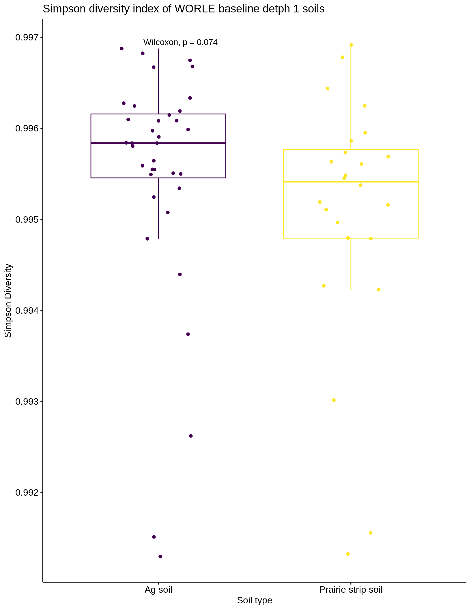
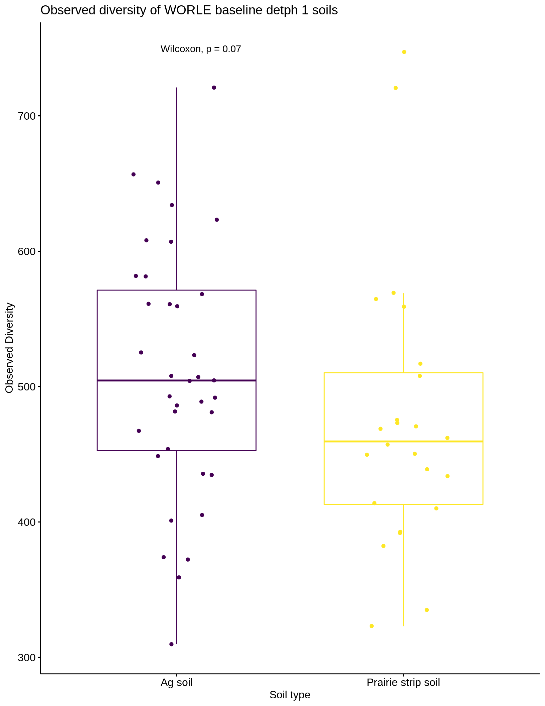

Bacterial diversity in agricultural and prairie strip soils
Jared Flater
5/18/2020
data("soilrep")
soilrep## phyloseq-class experiment-level object
## otu_table() OTU Table: [ 16825 taxa and 56 samples ]
## sample_data() Sample Data: [ 56 samples by 4 sample variables ]erich <- estimate_richness(soilrep, measures = c("Observed", "Shannon", "Simpson", "Fisher"))
ttest <- t(sapply(erich, function(x) unlist(t.test(x~sample_data(soilrep)$warmed)[c("estimate","p.value","statistic","conf.int")])))
ttest## estimate.mean in group no estimate.mean in group yes p.value
## Observed 1133.1428571 1109.392857 0.8222405
## Shannon 6.7239381 6.725982 0.9776912
## Simpson 0.9980636 0.998125 0.6300884
## Fisher 1400.0104151 1422.904606 0.7783465
## statistic.t conf.int1 conf.int2
## Observed 0.22579676 -1.872919e+02 2.347919e+02
## Shannon -0.02809354 -1.479344e-01 1.438458e-01
## Simpson -0.48438244 -3.156804e-04 1.928421e-04
## Fisher -0.28289961 -1.851811e+02 1.393927e+02StripsPhy <- readRDS("data/merged_STRIPs.RDS")
StripsPhy <- StripsPhy %>%
filter_taxa(function(x) sum(x) >= 1, T)
StripsPhy## phyloseq-class experiment-level object
## otu_table() OTU Table: [ 48381 taxa and 586 samples ]
## sample_data() Sample Data: [ 586 samples by 12 sample variables ]
## tax_table() Taxonomy Table: [ 48381 taxa by 6 taxonomic ranks ]
## refseq() DNAStringSet: [ 48381 reference sequences ]min(taxa_sums(StripsPhy))## [1] 1head(StripsPhy@sam_data$matrix)## [1] "soil" "soil" "soil" "soil" "soil" "soil"Chao1 and ACE
Both are nonparametric diversity estimates
plot <- plot_richness(StripsPhy, x = "soil_type", measures = c("Chao1", "ACE")) +
geom_boxplot() +
facet_grid(variable ~ sample_day)
plot
Depth 1 WORLE
The first 7 cm of soil are depth one, we will compare these samples from prairie and ag portions of the plot
Wd1 <- subset_samples(StripsPhy, experiment %in% "Worle_Rainfall" & depth %in% 1 & !soil_type %in% "border") %>%
filter_taxa(function(x) sum(x) >= 1, T)
Wd1## phyloseq-class experiment-level object
## otu_table() OTU Table: [ 15725 taxa and 138 samples ]
## sample_data() Sample Data: [ 138 samples by 12 sample variables ]
## tax_table() Taxonomy Table: [ 15725 taxa by 6 taxonomic ranks ]
## refseq() DNAStringSet: [ 15725 reference sequences ]Using phyloseq and it’s built in plot_richness
plot <- plot_richness(Wd1, x = "soil_type", measures = c("Chao1", "ACE")) +
geom_boxplot()
plot
plot <- plot_richness(Wd1, x = "sample_day", measures = c("Chao1", "ACE"), color = "soil_type") +
geom_boxplot()
plot
Wd1.Richness <- estimate_richness(Wd1, measures = c("Chao1", "ACE"))
ttest <- t(sapply(Wd1.Richness, function(x) unlist(t.test(x~sample_data(Wd1)$soil_type)[c("estimate","p.value","statistic","conf.int")])))
ttest## estimate.mean in group crop estimate.mean in group strip
## Chao1 7.583623e+02 8.546667e+02
## se.chao1 1.724528e-04 1.905859e-04
## ACE 7.583652e+02 8.546697e+02
## se.ACE 1.305958e+01 1.361247e+01
## p.value statistic.t conf.int1 conf.int2
## Chao1 0.05784381 -1.9150152 -1.958618e+02 3.253087941
## se.chao1 0.94386121 -0.0705492 -5.264651e-04 0.000490199
## ACE 0.05784510 -1.9150050 -1.958624e+02 3.253609303
## se.ACE 0.12729459 -1.5346724 -1.265635e+00 0.159853277r # compare_alpha <- function(var1, physeq) { # # Calcuate alpha diversity # sample_data <- sample_data(physeq) %>% # as_tibble() # sample_data$alpha <- estimate_richness(physeq, measures = c("ACE")) %>% # select(ACE) %>% # unlist() # # Do ANOVA # sample_data$grouping <- sample_data[[grouping_var]] # needed for how `aov` works # anova_result <- aov(alpha ~ grouping, sample_data) # # Do Tukey's HSD test # tukey_result <- HSD.test(anova_result, "grouping", group = TRUE) # # Plot result # group_data <- tukey_result$groups[order(rownames(tukey_result$groups)),] # my_plot <- ggplot(sample_data, aes(x = grouping, y = alpha)) + # geom_text(data = data.frame(), # aes(x = rownames(group_data), # y = max(sample_data$alpha) + 1, # label = group_data$groups), # col = 'black', # size = 10) + # geom_boxplot() + # ggtitle("Alpha diversity") + # xlab(grouping) + # ylab("Alpha diversity index") # # Return plot # return(my_plot) # } #
r # compare_alpha("sample_day", Wd1)
physeq <- Wd1
c1 <- c("soil_type")
c2 <- c("sample_day")
sample_data <- sample_data(physeq) %>%
as_tibble()## Warning in class(x) <- c(subclass, tibble_class): Setting class(x) to
## multiple strings ("tbl_df", "tbl", ...); result will no longer be an S4
## objectsample_data$alpha <- estimate_richness(physeq, measures = c("ACE")) %>%
select(ACE) %>%
unlist()
# Do ANOVA
sample_data <- sample_data %>%
mutate(grouping = paste(sample_day, soil_type, sep = 'x'))
# needed for how `aov` works
anova_result <- aov(alpha ~ grouping, sample_data)
anova_result## Call:
## aov(formula = alpha ~ grouping, data = sample_data)
##
## Terms:
## grouping Residuals
## Sum of Squares 5903523 6282616
## Deg. of Freedom 11 126
##
## Residual standard error: 223.2981
## Estimated effects may be unbalanced# Do Tukey's HSD test
tukey_result <- HSD.test(anova_result, "grouping", group = TRUE)
# Plot result
group_data <- tukey_result$groups[order(rownames(tukey_result$groups)),]
my_plot <- ggplot(sample_data, aes(x = sample_day, y = alpha)) +
# geom_text(data = data.frame(),
# aes(x = rownames(group_data),
# y = max(sample_data$alpha) + 1,
# label = group_data$groups),
# col = 'black',
# size = 10) +
geom_boxplot(aes(color = soil_type), position = "dodge") +
ggtitle("Alpha diversity") +
ylab("Alpha diversity index")
my_plot
ggpubr makes stats a lot easier
library(ggpubr)
sample_data <- sample_data(Wd1) %>%
lapply(., factor) %>%
as_tibble()
richness <- estimate_richness(Wd1)
sample_data <- cbind(sample_data, richness)
p <- ggboxplot(sample_data, x = "sample_day", y = "ACE", fill = "soil_type", add = "jitter")
plot <- p + stat_compare_means(aes(group = soil_type), label = "p.signif") +
ggtitle("ACE diversity index of WORLE detph 1 soils") +
ylab("ACE Diversity") +
xlab("Sampling Day") + scale_fill_viridis_d(name = "Managment", labels = c("Ag", "Prairie"))
plot
ggsave("images/WorleD1ACE.png", plot = plot, device = "png", width = 6, height = 4, units = "in")We see some differences on T002, which was two days after the rainfall simulation. The added moisture likely caused an increase in bacteria. Had we measured microbial biomass carbon, I would have expected to see an increase. We could confirm the increase by using 16s primers and qPCR for these samples.
library(ggpubr)
sample_data <- sample_data(Wd1) %>%
lapply(., factor) %>%
as_tibble()
richness <- estimate_richness(Wd1)
sample_data <- cbind(sample_data, richness)
p <- ggboxplot(sample_data, x = "sample_day", y = "Chao1", fill = "soil_type", add = "jitter")
plot <- p + stat_compare_means(aes(group = soil_type), label = "p.signif") +
ggtitle("Chao1 diversity index of WORLE detph 1 soils") +
ylab("Chao1 Diversity") +
xlab("Sampling Day") + scale_fill_viridis_d(name = "Managment", labels = c("Ag", "Prairie"))
plot
ggsave("images/WorleD1Chao1.png", plot = plot, device = "png", width = 6, height = 4, units = "in")library(ggpubr)
sample_data <- sample_data(Wd1) %>%
lapply(., factor) %>%
as_tibble()
richness <- estimate_richness(Wd1)
sample_data <- cbind(sample_data, richness)
p <- ggboxplot(sample_data, x = "sample_day", y = "Shannon", fill = "soil_type", add = "jitter")
plot <- p + stat_compare_means(aes(group = soil_type), label = "p.signif") +
ggtitle("Shannon diversity index of WORLE detph 1 soils") +
ylab("Shannon Diversity") +
xlab("Sampling Day") + scale_fill_viridis_d(name = "Managment", labels = c("Ag", "Prairie"))
plot
ggsave("images/WorleD1Shannon.png", plot = plot, device = "png", width = 6, height = 4, units = "in")rWd1 <- rarefy_even_depth(Wd1, sample.size = 10000, rngseed = 12121212, trimOTUs = T)## `set.seed(12121212)` was used to initialize repeatable random subsampling.## Please record this for your records so others can reproduce.## Try `set.seed(12121212); .Random.seed` for the full vector## ...## 14 samples removedbecause they contained fewer reads than `sample.size`.## Up to first five removed samples are:## P1-s3-d1-bP1-s3-d1-t0P1-s6-d1-bP1-s8-d1-t21P1-s9-d1-b## ...## 2313OTUs were removed because they are no longer
## present in any sample after random subsampling## ...Rarefied Diversity
Rarefaction is important for making sound judgements when comparing two sites (samples) in this case, our sequencing wasn’t even between all samples, so we are randomly re-sampling each at 10k reads. This removes a few samples that had less than 10k reads, we cannot include them in the comparison becuase the were undersampled. Yet, our conclusions remain the same (T002 differences).
library(ggpubr)
sample_data <- sample_data(rWd1) %>%
lapply(., factor) %>%
as_tibble()
richness <- estimate_richness(rWd1)
sample_data <- cbind(sample_data, richness)
colnames(sample_data)## [1] "unique_id" "experiment" "matrix"
## [4] "treatment" "plot" "sample_day"
## [7] "depth" "in_plot_location" "block"
## [10] "strip" "manure_treatment" "soil_type"
## [13] "Observed" "Chao1" "se.chao1"
## [16] "ACE" "se.ACE" "Shannon"
## [19] "Simpson" "InvSimpson" "Fisher"p <- ggboxplot(sample_data, x = "sample_day", y = "ACE", fill = "soil_type", add = "jitter")
plot <- p + stat_compare_means(aes(group = soil_type), label = "p.signif") +
ggtitle("ACE diversity index of WORLE detph 1 soils, rarefied to 10k") +
ylab("ACE Diversity") +
xlab("Sampling Day") + scale_fill_viridis_d(name = "Managment", labels = c("Ag", "Prairie"))
plot
ggsave("images/rWd1ACE.png", plot = plot, device = "png", width = 6, height = 4, units = "in")p <- ggboxplot(sample_data, x = "sample_day", y = "Chao1", fill = "soil_type", add = "jitter")
plot <- p + stat_compare_means(aes(group = soil_type), label = "p.signif") +
ggtitle("Chao1 diversity index of WORLE detph 1 soils, rarefied to 10k") +
ylab("Chao1 Diversity") +
xlab("Sampling Day") + scale_fill_viridis_d(name = "Managment", labels = c("Ag", "Prairie"))
plot
ggsave("images/rWd1Chao1.png", plot = plot, device = "png", width = 6, height = 4, units = "in")p <- ggboxplot(sample_data, x = "sample_day", y = "Shannon", fill = "soil_type", add = "jitter")
plot <- p + stat_compare_means(aes(group = soil_type), label = "p.signif") +
ggtitle("Shannon diversity index of WORLE detph 1 soils, rarefied to 10k") +
ylab("Shannon Diversity") +
xlab("Sampling Day") + scale_fill_viridis_d(name = "Managment", labels = c("Ag", "Prairie"))
plot
ggsave("images/rWd1Shannon.png", plot = plot, device = "png", width = 6, height = 4, units = "in")Prairie Pairwise
Just prairie soils pairwise comparison, we can see if any of the days were signigicantly more or less diverse than the other. The lines on the graph conncet the two samples that are being compared.
levels(as.factor(sample_data$sample_day))## [1] "Baseline" "T000" "T002" "T014" "T021" "T042"levels(as.factor(p$sample_day))## character(0)p <- sample_data %>%
filter(soil_type == "strip") %>%
ggboxplot(x = "sample_day", y = "Shannon", add = "jitter")
p
my_comparisons <- list( c("T002", "T014"), c("T002", "T000"), c("Baseline", "T000"), c("T014", "T021"), c("T021", "T042"))
plot <- p + stat_compare_means(comparisons = my_comparisons, label = "p.signif") +
ggtitle("Shannon diversity index of WORLE detph 1 Prairie soils, rarefied to 10k") +
ylab("Shannon Diversity") +
xlab("Sampling Day")
plotlevels(as.factor(sample_data$sample_day))## [1] "Baseline" "T000" "T002" "T014" "T021" "T042"levels(as.factor(p$sample_day))## character(0)p <- sample_data %>%
filter(soil_type == "strip") %>%
ggboxplot(x = "sample_day", y = "ACE", add = "jitter")
p
my_comparisons <- list( c("T002", "T014"), c("T002", "T000"), c("Baseline", "T000"), c("T014", "T021"), c("T021", "T042"))
plot <- p + stat_compare_means(comparisons = my_comparisons, label = "p.signif") +
ggtitle("ACE diversity index of WORLE depth 1 Prairie soils, rarefied to 10k") +
ylab("ACE Diversity") +
xlab("Sampling Day")
plot
Trying a violin plot
p <- sample_data %>%
filter(soil_type == "crop") %>%
ggviolin(x = "sample_day", y = "ACE", fill = "sample_day",
add = "boxplot", add.params = list(fill = "gray"))
p
my_comparisons <- list( c("T002", "T014"), c("T002", "T000"), c("Baseline", "T000"), c("T014", "T021"), c("T021", "T042"))
plot <- p + stat_compare_means(comparisons = my_comparisons, label = "p.signif") +
ggtitle("ACE diversity index of WORLE depth 1 Crop soils, rarefied to 10k") +
ylab("ACE Diversity") +
xlab("Sampling Day") +
scale_fill_viridis_d() +
theme(legend.position = "none")
plot